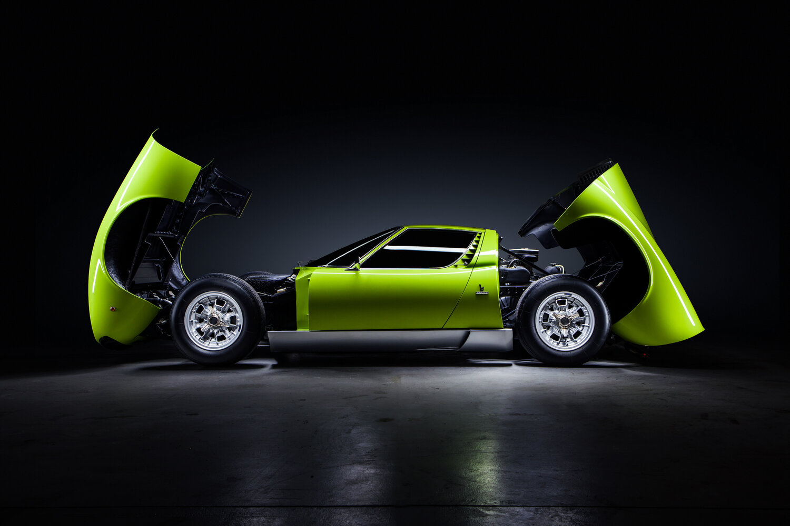

The Miura broke new ground in 1966 with its rear-mid engine layout and timeless design. It combined stunning looks with V12 performance to define a new era in automotive history.
Full Specifications
| Model | Miura P400 SV |
|---|---|
| Engine | 3.9L DOHC V12 |
| Power Output | 385 hp @ 7,850 rpm |
| Torque | 400 Nm @ 5,750 rpm |
| Transmission | 5-speed manual |
| Drive Type | Rear-wheel drive (RWD) |
| Top Speed | 280 km/h (174 mph) |
| 0–100 km/h | 5.8 seconds |
| Chassis | Steel monocoque |
| Suspension | Double wishbone front/rear |
| Brakes | 4-wheel disc |
| Weight | 1,250 kg (2,756 lbs) |
| Production Years | 1966–1973 |
| Units Built | 764 (all versions) |
Gallery
